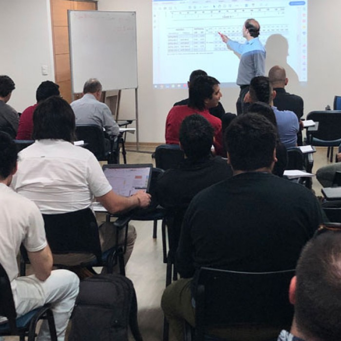

GALERIA DE EVENTOS
Observa nuestra galeria o vuela al INICIO
Matrimonio familia Perez Cruz
Fotografo: Andrés Ulloa
He has appeared in more than 100 films and television shows, including The Deer Hunter, Annie Hall, The Prophecy trilogy, The Dogs of War ...
Concierto en Boyaca
Fotografo: Henry Camacho
He has won two Academy Awards, for his roles in the mystery drama Mystic River (2003) and the biopic Milk (2008). Penn began his acting career in television with a brief appearance in a 1974 episode of Little House on the Prairie ...
Evento hotel Emperador
Fotografo: Andrés Ulloa
He rose to international fame with his role as the Man with No Name in Sergio Leone's Dollars trilogy of spaghetti Westerns during the 1960s ...
Fiesta infantil
Fotografo: Andrés Rodriguez
He has been known for his versatile portrayals of antiheroes and vulnerable characters.[3] He won the Academy Award for Kramer vs. Kramer in 1979 ...
Fiesta navideña
Fotografo: Henry Camacho
He has been nominated for three Academy Awards for his work in the films Primal Fear, American History X and Birdman. He also starred in other roles ...
Convención de ingenieros
Fotografo: Andrés Ulloa
English actor and author. Renowned for his distinctive working class cockney accent, Caine has appeared in over 115 films and is regarded as a British ...
Capacitación de Medicos
Fotografo: Andrés Rodriguez
Some of his most notable starring roles were in Martin Scorsese's Mean Streets and Taxi Driver, Ridley Scott's The Duellists and Thelma & Louise, Quentin Tarantino ...
Integración cristiana
Fotografo: Andrés Rodriguez
Throughout his career, Nicholson has portrayed unique and challenging roles, many of which include dark portrayals of excitable, neurotic and psychopathic characters ...
Capacitación a docentes
Fotografo: Andres Ulloa

He comes from a well-known acting family and began his televised acting in 1958 as a child with his father, Lloyd Bridges, and brother, Beau, on television's Sea Hunt ...
Matriminio familia Gomez Duran
Fotografo: Henry Camacho
is an American actor, producer, music video director, musician and activist. For his work as an artist, Phoenix has received a Grammy Award, a Golden Globe Award and three Academy ...
Arreglo floral
Fotografo: Andres Ulloa
He is known for his roles in Big (1988), Philadelphia (1993), Forrest Gump (1994), Apollo 13 (1995), Saving Private Ryan, You've Got Mail (both 1998), The Green Mile (1999), Cast Away (2000) ...
Inaguración de restaurante
Fotografo: Andrés Rodriguez
Best known for his distinctive supporting and character roles – typically lowlifes, bullies, and misfits – Hoffman was a regular presence in films from the early 1990s until his death at age 46.